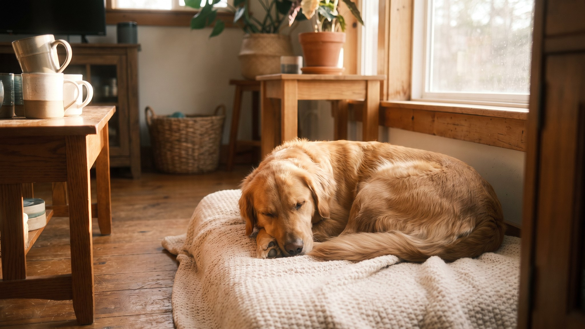

Пришли с прогулки, собака промокла под снегом, и через пару дней за ухом обнаружился плотный комок. Влажная шерсть плюс тепло батарей плюс трение ошейника склеивают её быстрее, чем летом. Ниже разобрано: где искать колтуны, каким инструментом работать и как расплести их так, чтобы собака не убегала от расчёски.
🐾 Заведите дневник ухода за собакой
Вес, шерсть, обработки, прививки — всё в одном месте. А если что-то смущает, AI-ветеринар ответит круглосуточно и бесплатно.
Завести дневник → Завести в MAX →
У вас iPhone? AnimaLife есть в App Store
Шерсть сваливается там, где постоянное трение или влага задерживается дольше всего. Шесть зон, которые проверяют в первую очередь:
Зимой добавляется статика от сухого воздуха отопления: шерсть электризуется и слипается быстрее. Влажная шерсть после снега высыхает неравномерно, и за сутки-двое превращается в войлок в тех самых зонах.
Четыре инструмента, которые нужны для разбора колтунов:
Порядок по шагам:
Частота зависит от типа шерсти. Шерсть длинная или с подшёрстком (шпиц, самоед, золотистый ретривер, бордер-колли) требует вычёсывания 3–4 раза в неделю, зимой лучше ежедневно. Жёсткая короткая шерсть (боксёр, далматинец) достаточно раз в неделю. Шерсть типа флис или волна (лабрадудль, португальская водяная собака) сваливается быстро и требует ухода каждые 2–3 дня.
Признаки того, что всё в порядке: гребень проходит по всей длине шерсти без зацепок, кожа под ней розовая и сухая, собака спокойно даёт работать со всеми зонами.
Есть случаи, когда самостоятельно не стоит:
🐾 Чтобы уход не держать в голове
AnimaLife напомнит, когда стричь когти, вычёсывать, купать и обрабатывать от паразитов, и заведёт дневник по вашему питомцу. Бесплатно.
Настроить напоминания → Настроить в MAX →
У вас iPhone? AnimaLife есть в App Store
🐾 Понравился разбор?
Подпишитесь на канал — каждый день разбираем по одному тревожному симптому у кошек и собак: что в пределах нормы, а когда пора к врачу. Подпишитесь, чтобы не пропустить разбор, который может спасти здоровье вашего питомца.
Материал носит информационный характер и не заменяет очную консультацию ветеринара.